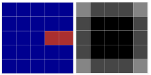

Game developer with a Computer Science background from Charles University (game development track)
and 2+ years of professional experience at Flying Rat Studio. Shipped titles on PS4, PS5, PS VR2,
Xbox One, Xbox Series X|S, and Nintendo Switch. Fluent in both Unity/C# and Unreal Engine/C++.
Passionate about creative problem-solving, connecting the virtual and real world, and building
games that are genuinely fun.
Vývojář her s informatickým vzděláním (MFF UK, specializace vývoj počítačových her) a více než
2 lety profesionálních zkušeností ve Flying Rat Studio. Podílel jsem se na vydání her pro PS4,
PS5, PS VR2, Xbox One, Xbox Series X|S a Nintendo Switch. Pracuji v Unity/C# i Unreal Engine/C++.
Zajímám se o kreativní řešení problémů, herní design a tvorbu zážitků, které propojují reálný
a virtuální svět.
Career & Education
Kariéra a vzdělání
present
2025
nyní
2025
Travelling & Independent Development
Cestování a samostatný vývoj
2 months in Sydney, Australia · 2 months in Thailand — working remotely on two independent app projects.
2 měsíce v Sydney, Austrálie · 2 měsíce v Thajsku — práce na dvou samostatných aplikačních projektech.

Reflex Locomotion App — nearly finished
Aplikace Reflex Locomotion — téměř hotovo
Flutter · Dart · FlutterFlow · ETA 2026
Flutter · Dart · FlutterFlow · Dokončení v roce 2026
Medical rehabilitation app for Rehabilitace Karlovy Vary s.r.o., guiding users through the Vojta Method (reflex locomotion therapy). Multi-language support. Built with FlutterFlow for rapid UI development, with full Flutter/Dart export. Design by Vojtěch Pinc.
Rehabilitační aplikace pro Rehabilitace Karlovy Vary s.r.o. zaměřená na Vojtovu metodu reflexní lokomoce. Vícejazyčná podpora. Stavěná ve FlutterFlow s možností exportu do čistého Flutter projektu. Design: Vojtěch Pinc.
FlutterDartFlutterFlowMedicalMedicína

Step by Step App — WIP
Flutter · Dart · FlutterFlow · Early development
Flutter · Dart · FlutterFlow · Raná fáze vývoje
Czech language learning app for foreigners, tied to the successful Step by Step textbook series. Same technology stack as the Reflex Locomotion app. Design by Vojtěch Pinc.
Aplikace pro výuku češtiny pro cizince, navázaná na úspěšnou učebnicovou řadu Step by Step. Stejný technologický základ jako Reflex Locomotion app. Design: Vojtěch Pinc.
FlutterDartFlutterFlow
2025
2023
Technology-focused studio specialising in console porting, optimisation, and advanced feature development.
Technologicky zaměřené studio specializující se na portaci her na konzole, optimalizace a vývoj pokročilých funkcí.

Internal studio game built in Unreal Engine. Implemented gameplay features in C++ and Blueprints, authored behaviour trees, integrated audio (SFX hooks), and performed general debugging.
Interní projekt studia v Unreal Engine. Implementace herních mechanik v C++ a Blueprintech, tvorba stromů chování (Behaviour Trees), integrace zvukových efektů a ladění chyb.
Unreal EngineC++BlueprintsBehaviour Trees

Part of the Flying Rat team responsible for the PS VR2 port of the world's best-selling VR game. Later moved to performance optimisations, tool creation, and general bug fixing across the codebase.
Součást týmu zodpovědného za port nejprodávanější VR hry na PS VR2. Následně přechod na výkonnostní optimalizace, tvorbu nástrojů a obecné opravy chyb v kódu.
UnityC#PS VR2OptimisationOptimalizace

Ported a boomer shooter from the DarkPlaces engine to Unity, targeting PS4, PS5, Xbox One, Xbox Series X|S, and Nintendo Switch. Responsible for gameplay features, UI implementation, and console-specific bug fixing.
Port boomer shooteru z engine DarkPlaces do Unity pro PS4, PS5, Xbox One, Xbox Series X|S a Nintendo Switch. Implementace herních a UI funkcí, opravy chyb specifických pro konzole.
UnityC#PS4/PS5XboxNintendo Switch
2023
2019
Charles University — Faculty of Mathematics and Physics
Matematicko-fyzikální fakulta Univerzity Karlovy
BSc Computer Science · Game Development track · Unfinished
Bc. Informatika – Vývoj počítačových her · Nedokončeno
Relevant courses:
Výběr absolvovaných předmětů:
Programming 1 (Python)
Programování 1 (Python)
Programming 2 (C#)
Programování 2 (C#)
Programming in C#
Programování v C#
Advanced Programming in C#
Pokročilé programování v C#
Programming in C++
Programování v C++
Advanced Programming in C++
Pokročilé programování v C++
Intro to Game Development (Unity)
Základy vývoje počítačových her (Unity)
Game Mechanics Programming (Godot)
Programování herních mechanik (Godot)
Introduction to Game Design
Úvod do herního designu
Computer Graphics Fundamentals
Základy počítačové grafiky
Algorithms & Data Structures 1 & 2
Algoritmy a datové struktury 1 & 2
Practical Game Jam course ×4
Praktikum z vývoje her (Game Jam) ×4
2019
2011
Gymnázium Joachima Barranda, Beroun
Secondary school · Maturita exam
Maturita: Matematika (státní & školní), Matematika+, Informatika, Český jazyk
Notable Projects
Vybrané projekty
Space Alert IRL
C#, Unity · Android · NFC · LAN Multiplayer
C#, Unity · Android · NFC · LAN Multiplayer
Cooperative multiplayer mobile game (LAN) inspired by the Space Alert board game. Players physically move between NFC-tagged rooms spread across the play area to operate a spaceship under attack. Built a custom NFC–Unity bridge and published a write-up on the integration.
Kooperativní multiplayerová mobilní hra (LAN) inspirovaná deskovou hrou Space Alert. Hráči se fyzicky přesouvají mezi místnostmi označenými NFC tagy rozmístěnými po herní ploše. Napsal jsem vlastní NFC–Unity most a publikoval návod.
UnityC#AndroidNFC
Park Game
C#, Unity · GPS · Team of 5
C#, Unity · GPS · Tým 5 lidí
Multiplayer commander-based RTS played in a real park. Players first meet and draw the arena, then command units while their commander position is linked to their real GPS coordinates. Designer, project lead, and programmer.
Multiplayerové commander-based RTS hrané v reálném parku. Hráči se sejdou, nakreslí arénu a pak hrají — pozice velitele odpovídá GPS souřadnicím hráče. Designer, projektový vedoucí a programátor.
UnityC#GPSMultiplayer
Watch trailer ↗
Trailer ↗
Gnome Trouble
Unity · GDS Prague Game Jam 2024 · 3rd place / 50 entries
Unity · GDS Prague Game Jam 2024 · 3. místo z 50 her
Genre-switching platformer: the first half plays as a 2D Mario-style side-scroller where you throw gnomes off a cliff — then mid-game the perspective and genre switch entirely into a top-down 3D Octopath Traveler-style RPG where you must go apologise to them.
Plošinovka, která se v půlce hry přepne do jiného žánru. První půlka je 2D Mario-style, kde hráč shazuje trpaslíky ze skály — druhá půlka přejde na top-down 3D styl Octopath Traveler, kde musí jít a omluvit se jim.
UnityGame Jam🥉 3rd Place
Play on itch.io ↗
Hrát na itch.io ↗
University Projects
Universitní projekty


BattleShips
Programming 1 (Python) · Programming 2 (C#, WinForms)
Programování 1 (Python) · Programování 2 (C#, WinForms)
Two versions: a Python console game with adjustable-difficulty AI, then a full C# WinForms version with free-form ship placement and a heatmap-based AI that scores every tile by remaining ship configurations.
Dvě verze: konzolová Python hra s nastavitelnou AI, a C# WinForms verze s libovolnými tvary lodí a heatmap AI, která hodnotí políčka podle zbývajících lodí.
PythonC#WinForms

PacMan
Programming in C++ course
Programování v C++
Custom PacMan with progressive difficulty and authentic ghost behaviours. Because SFML provides only bare-bones rendering, all animation systems and text rendering were written from scratch. Includes a mouse-driven map editor with auto-connecting pipes.
Vlastní PacMan s narůstající obtížností a autentickým chováním duchů. Protože SFML je velmi základní, bylo potřeba napsat vlastní animace, vykreslování a výpis textu. Obsahuje editor map s automatickým napojením trubek.
C++SFML

Space Alert IRL
Programming in C# · Advanced C# · Annual project
Programování v C# · Pokročilé C# · Ročníkový projekt
Cooperative LAN mobile game for Android inspired by Space Alert. Players move physically between NFC-tagged rooms to operate a spaceship. Custom NFC–Unity integration documented in a public post.
Kooperativní LAN mobilní hra pro Android inspirovaná Space Alertem. Hráči se fyzicky přesouvají mezi místnostmi s NFC tagy. Vlastní NFC–Unity integrace zdokumentovaná ve veřejném příspěvku.
UnityC#AndroidNFC

Park Game
Team project · 5 people
Týmový projekt · 5 lidí
Commander-based RTS played in a real park. The commander's in-game position is linked to the player's GPS location. Designer, project lead, and programmer. Came with a full trailer.
Commander-based RTS hrané v reálném parku — pozice velitele odpovídá GPS souřadnicím. Designer, projektový vedoucí a programátor. Hra má plnohodnotný trailer.
UnityC#GPS
Game Jams — 8 participations
Game Jamy — 8 účastí

Gnome Trouble
GDS Prague Game Jam 2024 · 🥉 3rd / 50
2D platformer that switches genre to top-down 3D RPG at the midpoint.
2D plošinovka, která se uprostřed přepne do top-down 3D RPG.
itch.io ↗

∆ntHill
LUDUM Dare 2023 · Theme: Harvest
LUDUM Dare 2023 · Téma: Harvest
Anthill management — deploy scouts and harvesters, upgrade the colony.
Správa mraveniště — posílej průzkumníky a sběrače, rozšiřuj kolonii.
itch.io ↗

The Dwarves Delved Too Diligently
Spring Game Jam @ Matfyz 2023
Spring Game Jam @ Matfyz 2023
Grid mining puzzle — regulations pile up after every level.
Těžební puzzle na mřížce — po každém levelu přibývají nařízení.
itch.io ↗

Clumsy Dwarves
GAMEDEV CUNI JAM 2022 · Theme: YOLO
GAMEDEV CUNI JAM 2022 · Téma: YOLO
First Unity project. Factory comedy — dwarves die from old age, stupidity, or boxes.
Mé první Unity. Tovární komedie — trpaslíci umírají stářím, hloupostí nebo bednou.
itch.io ↗

Bear Breakout: 25D Glass Conundrum
FlyingRat GameJam 2024 · Theme: Fragile
FlyingRat GameJam 2024 · Téma: Fragile
Local co-op for 2 — carry a fragile glass panel across the level.
Lokální co-op pro 2 — přeneste skleněný panel přes level bez rozbití.
itch.io ↗

Bold Drive
GDS Prague Game Jam 2025 · Theme: Fortune favours the bold
GDS Prague Game Jam 2025 · Téma: Fortune favours the bold
You're a "Bold" driver (wordplay on Bolt taxis) — drive and chat with passengers.
Jsi řidič „Bold" (slovní hříčka na Bolt) — vezíš zákazníky a chatíš s nimi.
itch.io ↗
Summer Camps & Volunteer Work
Tábory a dobrovolnictví
Summer Camp Lead Organiser — Camp Pecka, YMCA Braník
Hlavní vedoucí tábora Pecka — YMCA Braník
Lead organiser since 2022 · Volunteer since age 15 (2015–present)
Hlavní vedoucí od 2022 · Vedoucí od 15 let (2015–dosud)
Since age 15 I have volunteered at summer camps and weekly youth meetings. Over the years I prepared countless small games (designing and running something new every Friday), and several larger long-running experiences. Below are the two multi-year board game projects and the large final game of one of our camps.
Od 15 let se věnuji práci s dětmi na schůzkách a táborech. Každý pátek jsem připravoval novou hru a spolupodílel se na několika větších celoročních projektech. Níže jsou dvě celoroční hry a velká závěrečná táborová hra.
Legend · ~2 yearsroky
Ongoing weekly board game experience
Celoroční hra na schůzkách
Civilisation V-style strategy played on a physical wall map made with a Civilization V map builder. Players earned points at weekly meetings and spent them colonising territory, building cities, raising armies, and collecting rare resource sets. Deliberately designed to create intrigue while keeping direct conflict limited. Ran every Friday for nearly two years.
Strategická hra na nástěnce s mapou z map builderu Civilizace V. Hráči za body ze schůzek budovali města, rozšiřovali území, stavěli armády a sbírali kolekce vzácných surovin. Designovaná záměrně tak, aby docházelo ke konfliktům, ale omezeně. Hra běžela každý pátek téměř 2 roky.

Dune · ~1 yearrok
Ongoing weekly board game experience
Celoroční hra na schůzkách
Inspired by the 1970s Dune board game. Players harvest spice on contested hexagons while a weekly storm destroys everything in its path. Conflict is central — combat is resolved using a system inspired by "878 Vikings: Invasions of England," where troops may choose to flee instead of fighting, saving their lives at the cost of the battle.
Inspirováno deskovou hrou Duna z 70. let. Hráči těží koření na sporných hexagonech, verbují a přesouvají armády. Každý týden se hýbe bouře a ničí vše ve své cestě. Soubojový systém vychází ze hry „878 Vikings" — jednotky mohou místo útoku utéct.

Prince Caspian — Grand Final Camp Game
Velká závěrečná táborová hra na motivy Prince Kaspiana
Summer camp 2019 · Co-designed with Vojtěch Pinc & Tadeáš Friedrich
Tábor 2019 · Spolupráce s Vojtěchem Pincem & Tadeášem Friedrichem
Large-scale hex-tile capture game for a full camp. Teams received time-limited task cards gradually released throughout the day — completing them earned captures, defences, or attacks on the shared map. Scoring rewarded formations and encirclements, forcing real-time prioritisation under time pressure. We even stopped issuing cards during lunch — except one card that told the kids to go eat and rest.
Dobývání hexagonů na mapě pomocí úkolových karet uvolňovaných postupně s omezenou dobou platnosti. Body za formace a obkličování. Týmy musely v reálném čase prioritizovat úkoly. V době oběda jsme přestali vydávat kartičky — až na jednu, na které bylo, ať děti jdou jíst a odpočívat.